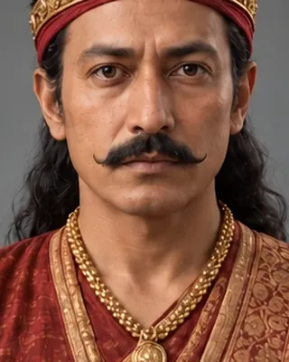

c. 1305
দুৰ্লভনাৰায়ণ
c. 1330–1350 (reconstructed) · King of Kamata

Son of Pratapdhwaj who took Kamrup, Goalpara and Koch Bihar from Kamatapur. His court poets produced early Assamese literature, including Hema Saraswati and Harihara Vipra.
Replaces the earlier early-14th-century guess. 1324, which falls in Pratapdhwaj's reign by these dates. The chronology and extent of his rule are disputed.
Record confidence: medium.